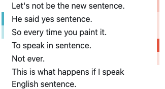
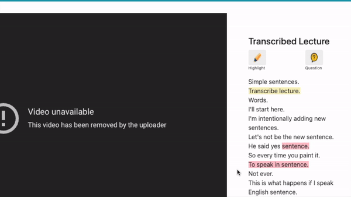
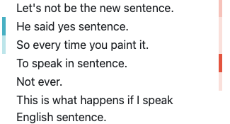
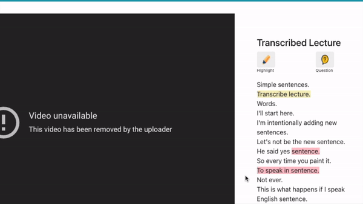

Consent to Participate in Research and Instruction (Learner)
Title of study: Towards Participatory Educational Live Streaming.
Investigator:  Jingchao Fang, Hao-Chuan Wang
Contact information: If you have any questions about this research, please feel free to contact the investigator at notestruct2020@gmail.com.
Investigator:  Jingchao Fang, Hao-Chuan Wang
Contact information: If you have any questions about this research, please feel free to contact the investigator at notestruct2020@gmail.com.
Introduction
You are being invited to join a research study. If you agree to be in this research, you will be asked to learn from an educational live stream, make transcript-based annotations, and complete a survey. Your taking part in this research should take about 60 minutes.
Taking part in research is completely voluntary. You are free to decline to take part in the project. You can decline to answer any questions and you can stop taking part in the project at any time. Whether or not you choose to take part, or answer any question, or stop being in the project, there will be no penalty to you or loss of benefits to which you are otherwise entitled.
Compensation
To thank you for participating in this study and to compensate for your time, you will
receive $10 payment through Prolific.
If you agree to take part in the research, you can save a copy of this page
to keep for future reference. We have included a more detailed overview below. Please click on the
"Accept" button at the end of this page if you agree to participate.
Process, Overview and Instruction
In this task, you are asked to watching the live streaming lecture, and make annotations (highlight or ask questions) based on the transcript.
On the interface, you should be able to see the embedded video on the right, and the real-time transcription on the left.
On the left hand side of the transcript, you will see green vertical bars representing the parts of the transcipt you and your peer learners highlighted. Darker green means more people highlighted that sentence. Similarly, on the right hand side of the transcript, you will see red vertical bars representing the parts of the transcipt you and your peer learners asked questions based on. Darker red means more people asked questions based on that sentence. 
To make a highlight, select the part of the transcript that you would like to highlight, then click "Highlight" button above the transcript.
To ask a question, select the corresponding part of the transcript that you don't understand, then click "Question" button above the transcript. Type down your question in the pop-up window, then click "Save" when you finish. To help your instructor understand your questions, please make sure you accurately selected the part of the transcript that your question is based on.
If you want to delete a previous highlight or question, move your mouse to the highlight/question, and when a small pop-up window shows up, click "Delete".

There is a "Show summary" button below the video player. When instructor is pausing, the button turns red. You can click to see a summary of activities since last resume. Your instructor might address some questions based on the summary. Click the button again to hide the summary.
After the instructor finished the lecture, a "Stop watching" button will show below the real-time transcript. Click to proceed to the next step.

On the left hand side of the transcript, you will see green vertical bars representing the parts of the transcipt you and your peer learners highlighted. Darker green means more people highlighted that sentence. Similarly, on the right hand side of the transcript, you will see red vertical bars representing the parts of the transcipt you and your peer learners asked questions based on. Darker red means more people asked questions based on that sentence. 
To make a highlight, select the part of the transcript that you would like to highlight, then click "Highlight" button above the transcript.
To ask a question, select the corresponding part of the transcript that you don't understand, then click "Question" button above the transcript. Type down your question in the pop-up window, then click "Save" when you finish. To help your instructor understand your questions, please make sure you accurately selected the part of the transcript that your question is based on.
If you want to delete a previous highlight or question, move your mouse to the highlight/question, and when a small pop-up window shows up, click "Delete".

There is a "Show summary" button below the video player. When instructor is pausing, the button turns red. You can click to see a summary of activities since last resume. Your instructor might address some questions based on the summary. Click the button again to hide the summary.
After the instructor finished the lecture, a "Stop watching" button will show below the real-time transcript. Click to proceed to the next step.